Subclone Analysis Tool Process Book
Overview and Motivation
The primary reason for this visualization will be to allow its users to analyze genetic somatic variants through multiple timepoints. Specifically this tool should illustrate how tumor variants change allele frequencies through the sample timepoints. From this analysis we will be able to quickly see which variants (and by extension, tumor populations that contain these variants) are disappearing and which variants are thriving. This will, hopefully, help researchers understand how the treatments between timepoints are affecting the tumor cell populations. To put the benefits succinctly; this visualization will allow users to:
- View variants through the sample timepoints.
- Mark variants to aid in visually tracking through the various timepoints.
- Provide a mechanism to help group variants that are part of tumor populations to better understand their relationships through time.
Related Work
I work at the USTAR Center for Genetic Discovery at the University of Utah. I have had a strong interest in cancer research, specifically with genetic variants that potentially cause cancer as well as the genetic mutations that promote/hinder tumor growth throughout tumor's evolution.
Currently our lab is analyzing tumor sequences from a single individual who, unfortunately, developed breast cancer and underwent 3 chemotherapy treatments. This data is the assembled genome of this individual at 5 timepoints; the first timepoint being a sample collected from healthy tissue and samples 2 through 5 were captured at the tumor site after various rounds of chemotherapy.
I have chosen to focus my project on this dataset because there are lots of fascinating questions that could be explored with this cancer dataset. Because of the reduction of costs in sequencing as well as the accuracy of next generation sequencing technologies, subclone analysis could potentially become a powerful way to direct patient treatment options. Also, hopefully, it will provide a benefit to others who have similar data and want to perform similar analysis.
This work is heavily influenced by Yi Qiao's work. Also, Yi has been a outstanding resource for this project. He has spent time working with me to help me better understand the biology as well as the current research in this area.
Questions
This visualization is a tool to help quickly identify which variants should be clustered together for subclone analysis. The figure below illustrates how you can understand subclone structures from allele frequencies. In the parallel coordinates plot each y-axis is the allele frequency of the exome missense variants at timepoints (after each chemotherapy).

In the diagram above you will notice that the parallel coordinate lines are clustered using color coded lines that correspond to the bubbles in section B. These bubbles represent variant evolutionary lineage and are traced forward to show which variant populations (subclones) are reduced and which thrive.
In this, it is important to note that at B3 a single subclone survives and later mutates until the final timepoint. This tells us that the chemotherapy was likely working but was discontinued, possibly because of unbearable side effects. This type of on-the-fly analysis could be incredibly useful to clinicians, if they have an deeper understanding of how the tumor is responding to the treatment they could potentially switch to a similar treatment adjust current treatment accordingly. So emphisize the point, it is essential to correctly identify each variant into its corresponding subclone structure. This tool will help us query our variants through multi-dimensional (timepoints, allele frequency) data to help identify subclone structures.
Data
For this visualization I have a multi-sample VCF with 5 timepoints for an individual with Breast Cancer captured over the course of 2 years. I chose not to format the data but rather to write a VCF parser. The reason for this is because I wanted this project to have the flexibility to be useful with any multi-sample VCF. This way, users can simply select their standard VCF file and begin visualizing thier data without the need for formatting into a special JSON file. The data has over 15000 variants but I am planning on allowing users to filter on exome. This will cut the size down to about 60 variants which is much simpler to visualize.
It will be possible to extract more data (variant annotations that describe more detailed metrics about the variant) and may be included in a table that can be used to filter and sort which could aid in the final visualization.
Exploratory Data Analysis
Initially I wanted to help filter the data using a standard line graph. The graph below will illustrate the type of analysis I was looking for:

This diagram plots the comes from Yi's paper on subclone analysis and highlights the number of viable structures within variant data. Later I will show early screenshots from my visualization that tried to extract subclones using a similar plotting algorithm. The attractive feature of this plot is that you can more-or-less "eyeball" the subclone structures. I had the idea that you could change the range of the counts (or allele frequencies) along the y-axis and isolate specific variants which would hopefully cause the subclones to "pop out". I have better ideas now but I did implement a full working version of this visualization.
Design Evolution
In the early days I was interested in scatter plots. I was drawn to the idea that the clusters of variants that make up the subclone might pop out. Below is a few hand drawn examples of potential design ideas that were part of my proposal.
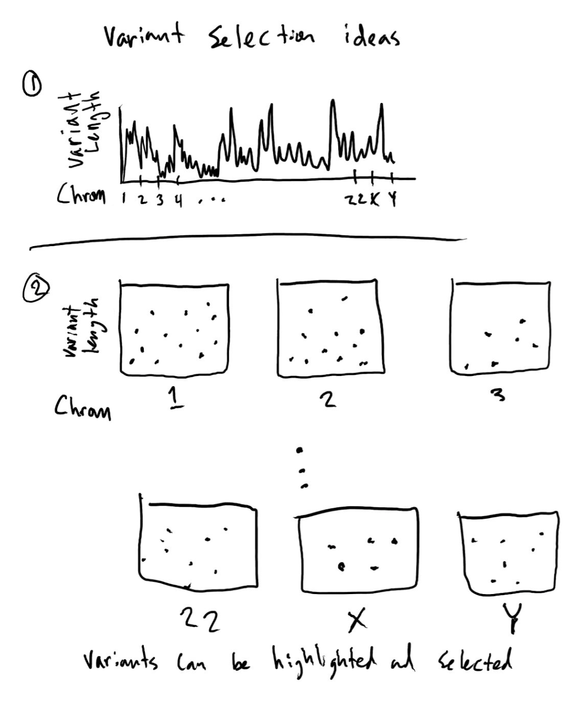 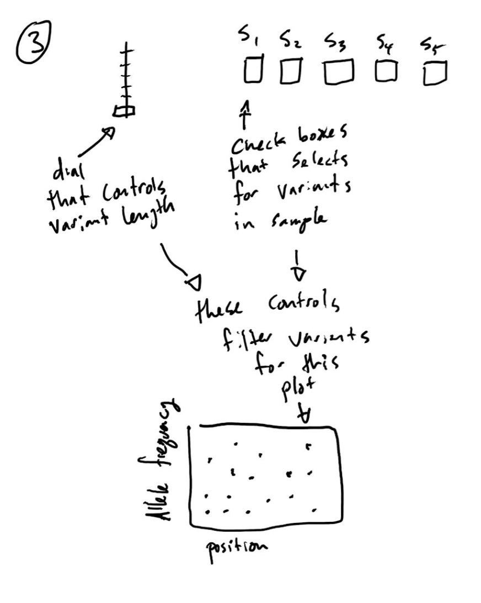After talking this over with Yi and others I decided that the scatter plots would probably be difficult to not only control but also to select the variants once they were isolated. Also, Yi mentioned that he already tried it and it's a complete mess so rather than attempt to recreate a mess I decided to approach it using line graphs, which I think looks very clean This led me to the idea of plotting this data exclusively with line charts.
Looking at the subclone histogram plots above I tried to model line graphs based on that data. See below:

Originally I was going to have a table below to indicate which variants are within the range of the filtered plots but in this format it is impossible to get fine-grained with the selections. See below how the filter bar can help isolate different peaks.

As you can see, this method is pretty clean it really isn't good for filtering. In each plot (except B0) it appears that there are 2 bumps which looks like there are just 2 subclones, but we know from other analysis that this data probably has 9 subclones. This method is not very successful at isolating the various subclones.
After meeting with the course TA (Alex Bigelow) he encouraged me to look more into the idea of a parallel coordinate plot and also to get a bit more direction from Yi on various filtering methods. I am glad for both conversations because it switched my focus from filtering a large dataset using these cumbersome line plots to a parallel coordinate plot using selection tools and data tables. Below you will see a mockup (taken directly from this website).

This parallel coordinate plot is a much better way to view and filter the data. In fact, this library (though it proved a bit tough to work with) provided a great integration between the parallel coordinate plot and a data table.
Implementation
The key functionality is the link between the parallel coordinates graph and the data grid. The rows in the data grid are variants and the lines are the variant allele frequency at the 4 timepoints. When the user mouses over the rows in the data grid the corresponding variant is highlighted and the other variants fall into the background.
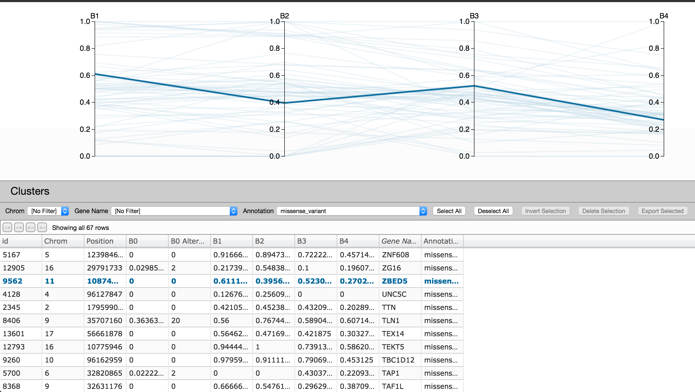
Another key feature is variant selection.
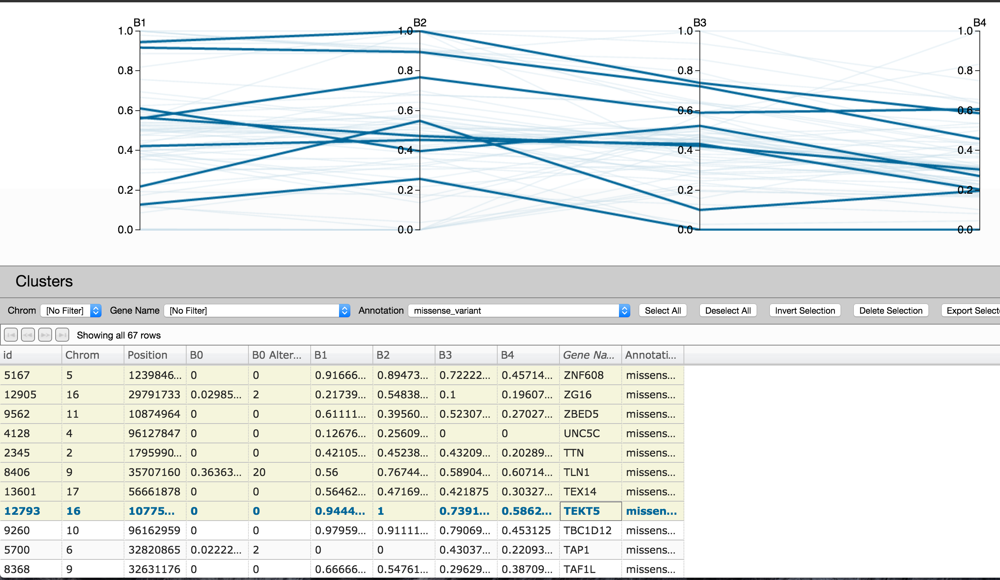There are several ways in which users can select variants.
- Click on a row in the data grid (also, control-click and shift-click functionality applies).
- Using the brush tool at any/all of the timepoints you can isolate the variants within an allele frequency and then click the 'select all' button. This will highlight all of the brushed variants
- Users can also highlight by using the filtering drop downs. The filter drop downs provide a way to quickly isolate variants of a particular type, gene and/or chromosome. Once the filter option(s) are selected you can click the 'select all' button to highlight the filtered variants.
Another feature that is incredibly useful is the brushing tool (mentioned above). 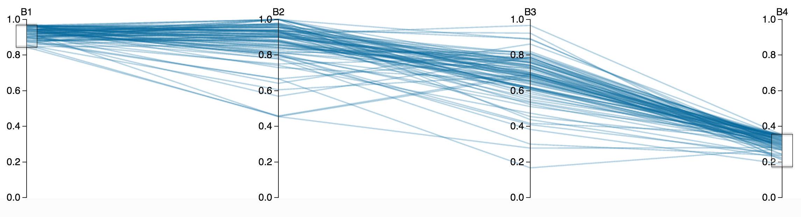
The brushing tool allows users to brush each timepoint to isolate variants within an allele frequency. This allows users to visually investigate trends in the variant allele frequencies. Using this with the data grid gives users the power to investigate which genes the may be affected by the variant trends.
Custering the data is a great feature for grouping variants.
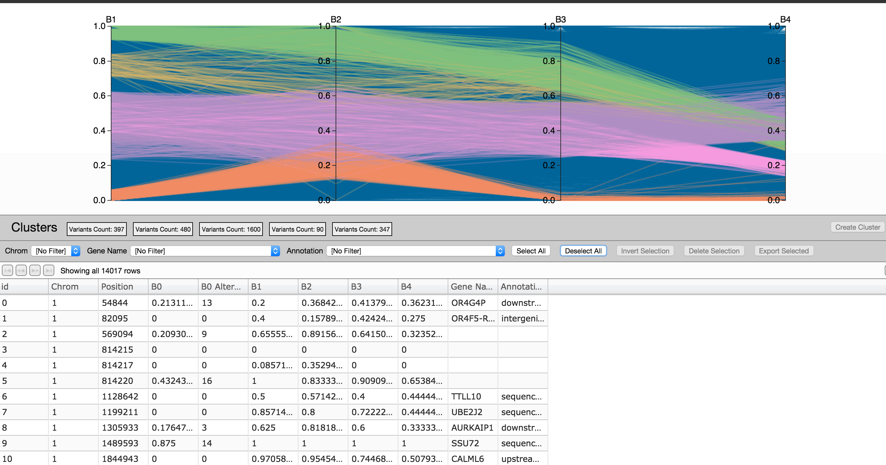Clustering gives users the ability to track which variants follow trends over time and gives the user the overall visualization of the suspected subclone populations. Understanding which subclones resist treatment and which subclones respond to treatment is the name of the game.
The ability to export your selected data to VCF is really useful.
Once the visualization has given the user/researcher an understanding of the subclone trends it is really valuable to export those subclone variant populations to VCF for further analysis.
Though it isn't very inciteful yet, you can switch the order of the timepoints. Since it is so easy to brush the timepoints it makes seeing them next to eachother less useful than it would otherwise be.
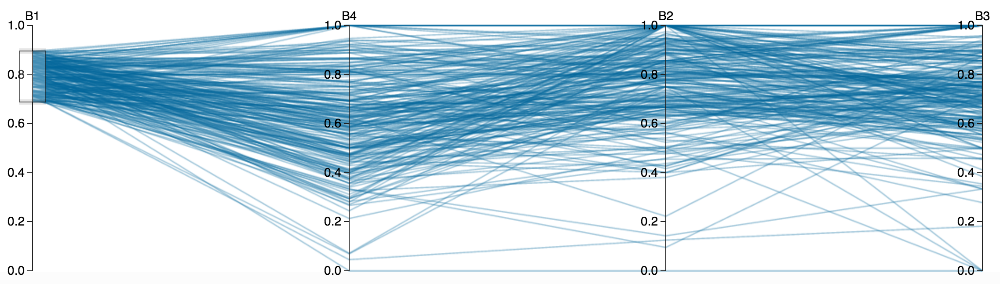Evaluation
There were some really interesting trends that I didn't see. Specifically, I didn't see a significant subclone population start with an allele frequency of zero and end with a high allele frequency
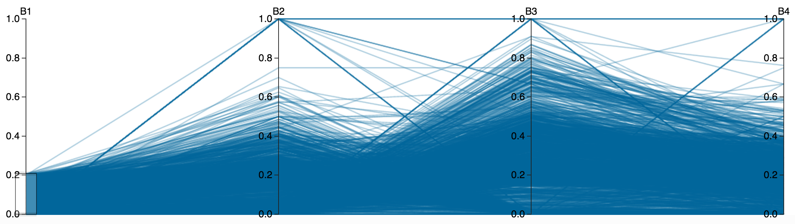Though this was totally expected, large numbers of alleles started with a high allele frequency and there is a clear trend downward.
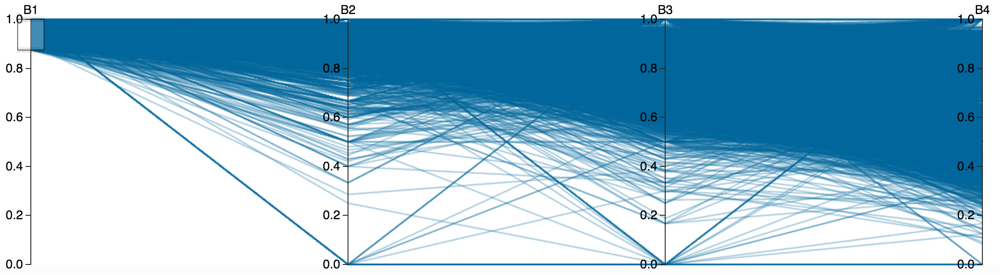Another cool feature is the ability to delete variants from the view to "clean up" the normal contamination. When filtering out the variants with B0 contamination you can see the variant trend lines much more clearly. See below a comparison of the with contamination and without
With contamination
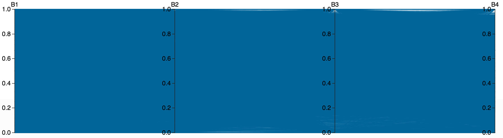Without contamination
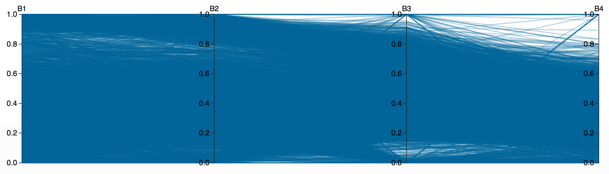This tool is actually really great for quickly pouring over thousands of variants to look for potential patterns. Even at 14000 variants it is incredibly responsive and the memory footprint is quite low. I am very happy with the parallel coordinates view, it is such an excellent medium for viewing large amounts of data sampled at various timepoints.
For the demo I am only using one VCF file but I will change the code to allow users to upload VCF files. Also, I already have plans to add the ability to export annotations about the clusters so when VCFs are loaded the clusters are populated. Another very useful feature I am going to add is the ability to view, not only allele frequencies, but also read count and other useful visualizations related to discovering the subclone structures. It seems like allele frequency does not give the best visualization for understanding both homozigious and heterozigious variants in the same subclone since the homozigious will have roughly 2x the allele frequency. Using both allele frequency and read counts may help overcome this issue.